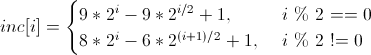

При сортировке Шелла сначала сравниваются и сортируются между собой значения, отстоящие один от другого на некотором расстоянии d. После этого процедура повторяется для некоторых меньших значений d, а завершается сортировка Шелла упорядочиванием элементов при d=1 (то есть обычной сортировкой вставками). Эффективность сортировки Шелла в определённых случаях обеспечивается тем, что элементы «быстрее» встают на свои места (в простых методах сортировки, например, пузырьковой, каждая перестановка двух элементов уменьшает количество инверсий в списке максимум на 1, а при сортировке Шелла это число может быть больше).
Невзирая на то, что сортировка Шелла во многих случаях медленнее, чем быстрая сортировка, она имеет ряд преимуществ:
При проведении экспериментов, для выбора длины промежутков используется предложенный Седжвиком метод:
Перед сортировкой происходит вычисление длин промежутков, которые записываются в массив inc.
Значение записываемого элемента вычисляется по формуле:

Остановиться нужно на значении inc[i-1], если 3*inc[i] > размер массива.
| Лучшая | Средняя | Худшая |
|---|---|---|
| n | n (log n)² или n^(3/2) | n (log n)² |